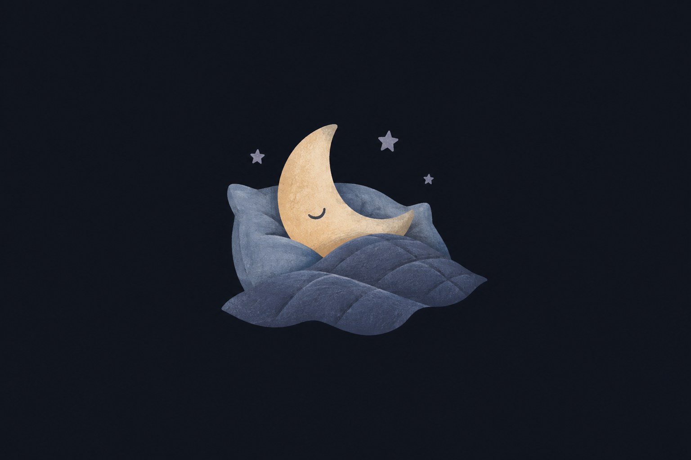

SUN, 13 SEPTEMBER
Tonight
One tap. Back to rest.

Asleep at 20:45·1 event
Water · 23:40Last event · a sip
Add a little detail?
Optional. Your demo event is already recorded.
ONE NIGHT AT A TIME
History
A little context, when you have a moment.
SEPTEMBERSample nights
Sun, 13 September1 event · night in progressOpen
Sat, 12 SeptemberAsked to pee · 03:15Dry
Fri, 11 September1 wetting · 02:20Wet
Thu, 10 SeptemberNo nighttime eventsDry
Wed, 9 SeptemberMorning review missingUnconfirmed
Every night is information.
No scores. No streaks.
YOUR BEDSIDE SPACE
A little quieter
Keep the warmth, or turn it down.
This study explores the nighttime appearance.
Daytime appearance is still to be decided.
MON, 14 SEPTEMBER
Morning check-in
How was the night?
Choose an outcome to complete the demo night.
Other details can wait.
Only the outcome is filled in.
A visual prototype, not the live log.